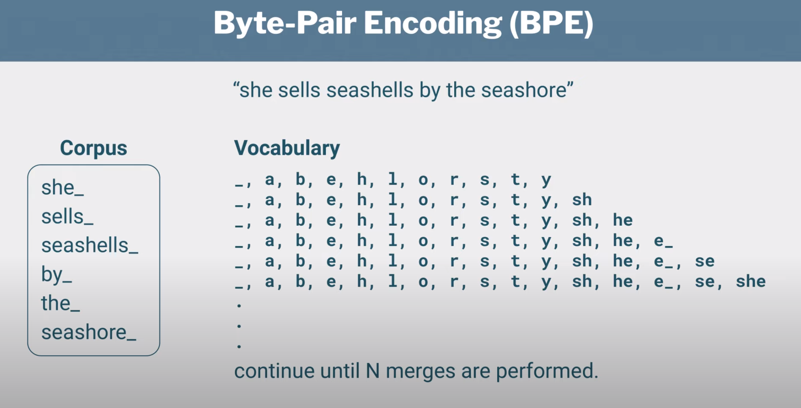

Tokenization#
Warning
If this notebook seems half done, its because it is. I am still working on it. I will update it based on this conceptual guide and this implementation guide.
In earlier chapters we have limited the discussion to tokenizers that either produce a list of words or a list of characters. Its very important though to understand the connection that exists between tokenization and modeling for various NLP tasks.
Model fine-tuning
The last few years we have seen the rise of pre-trained language models such as BERT, GPT-2, GPT-3, etc. These models are trained on large amounts of text data and are then used to perform downstream tasks such as text classification, text generation, etc. When you finetune a language model, you have to feed a pretrained model with the same type of tokens that it was trained on.
Model training from scratch
If a language model is not available in the language you are interested in, or if your corpus is very different from the one your language model was trained on, you will most likely want to retrain the model from scratch using a tokenizer adapted to your data. That will require training a new tokenizer on your dataset. Follow this guide to learn how to do that.
Tokenizers#
Lets review the main tokenizers so we highlight such connection for each type specifically.
Word level tokenization#
The word-level tokenizers are intuitive, however, they suffer from the problem of unknown words, tagged as Out Of Vocabulary (OOV) words. They also tend to result into large vocabulary sizes, assigning different tokens to “can’t” and “cannot”. They also have issues with abbreviations eg. “U.S.A”.
from spacy.lang.en import English
nlp = English()
# Create a Tokenizer with the default settings for English
# including punctuation rules and exceptions
tokenizer = nlp.tokenizer
text = "I have a new GPU!"
doc = nlp(text)
for token in doc:
print(token.text)
I
have
a
new
GPU
!
Character level tokenization#
Character-level tokenization are more flexible as they bypass the OOV issue, however to capture the context of each word we need to use much longer sequences and this results in loss of performance.
Byte Pair Encoding (BPE)#
In BPE, one token can correspond to a character, an entire word or more, or anything in between and on average a token corresponds to 0.7 words. The idea behind BPE is to tokenize at word level frequently occuring words and at subword level the rarer words. GPT-3 uses a variant of BPE.

Let see an example a tokenizer in action. We wull use the HuggingFace Tokenizers API and the GPT2 tokenizer. Note that this is called the encoder as it is used to encode text into tokens.
from transformers import GPT2Tokenizer
tokenizer = GPT2Tokenizer.from_pretrained("gpt2")
tokens = tokenizer.tokenize("I have a new GPU!")
print(tokens)
print(tokenizer.convert_tokens_to_string(tokens))
print(tokenizer.convert_tokens_to_ids(tokens))
['I', 'Ġhave', 'Ġa', 'Ġnew', 'ĠGPU', '!']
I have a new GPU!
[40, 423, 257, 649, 11362, 0]
If you are perplexed about the Ġ please note that this character is what the encoder produces for the space character. The encoder code doesn’t like spaces, so they replace spaces and other whitespace characters with other unicode bytes. The encoder more specifically takes all control and whitespace characters in code points 0-255 and shifts them up by 256 to make them printable. So space (code point 32) becomes Ġ (code point 288).
In the following we have another subword tokenization from the BERT tokenizer known as WordPiece.
from transformers import BertTokenizer
tokenizer = BertTokenizer.from_pretrained("bert-base-uncased")
tokenizer.tokenize("I have a new GPU!")
/workspaces/artificial_intelligence/.venv/lib/python3.11/site-packages/tqdm/auto.py:21: TqdmWarning: IProgress not found. Please update jupyter and ipywidgets. See https://ipywidgets.readthedocs.io/en/stable/user_install.html
from .autonotebook import tqdm as notebook_tqdm
['i', 'have', 'a', 'new', 'gp', '##u', '!']
“##” means that the rest of the token should be attached to the previous one, without space (for decoding or reversal of the tokenization).